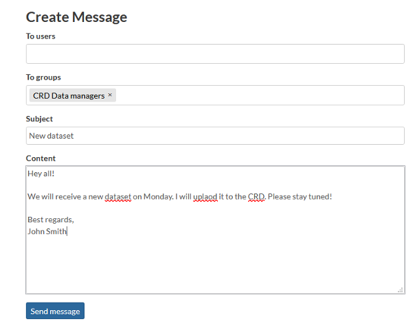

Using CRD¶
Instructions for basic navigation and usage of the Climate Risk Database. Here you will find guides how to register to the service and how to explore the contents.
Registering¶
Join the Climate Risk Database community by registering and updating your profile. As a member, you may access all CRD’s features, such as uploading layers and documents, and saving the maps you have created.
Click Register in the top-right corner.
Fill out the form. Enter your email, create username and password.
After administration of the CRD validates your account, you will get an email to confirm your account. After confirmation you are good to go and sign into the Climate Risk Database. Welcome aboard!
Updating profile¶
First task after registering for you is to edit your user profile. Share information about you to the community by telling who you are, what your position is and where you are from. You can update this information anytime.
Edit profile information¶
After signing in, go to your Profile page by clicking your username in the top-right corner.
From the right-hand side menu, click Edit profile.
Edit your personal information by adding your name, description of yourself and contact information. You can even edit your avatar.
When finished, click Update profile at the bottom of the page.
Other settings¶
From the same right-hand side menu, you can access other user settings as well, such as changing your password and setting your notification preferences. You can find other interesting links and activities from this menu as well, feel free to explore them!

Community¶
The Climate Risk Database community is ever expanding when new urban planners, researchers, educators, students, and many others find the database and utilize its content. You can explore the registered members, interact with them, and view the data owners’ information.
Explore people¶
Find out who else is part of the Climate Risk Database community by exploring registered users.
Click Community –> Registered Members from the header menu.
Explore people by searching them by their name, sorting the profiles or going through them page by page.
Click that member’s username whose profile you want to explore.
Contact users¶
You can view other members’ profiles to get to know them more, and even send them messages.
When you are in your own, or in someone else’s profile page, click Message User.
Select the user you want to message from the first list. You can select multiple users by holding CRTL from your keyboard and clicking the names, simultaneously.
Alternatively, if you want to reach all members of a group, select the group from the second list.
Give your message subject and write the message. When ready, click Send message.
You can view your conversations in your Inbox. Access it by clicking your username in the top-right corner and selecting Inbox.

Invite users¶
If you know someone who would love to be a member of the Climate Risk Database community, or they would have content to contribute with, you can invite them to be a member by sending an email invitation.
Invite external users to join Climate Risk Database by clicking Invite Users on your own profile page.
Write the emails you want to send the invitation to and separate them with semicolon (;).
Click Submit.
Note: If this feature is disabled on your profile page, this activity is not currently available for you.
Data owners¶
All layers uploaded to CRD have an owner, which is an organization that has been part of creating the data and/or owns it. You can explore all the owner organizations and access their profile page through layers that are owned by them. From the profile page, you can find description of the organization, as well as their contact information.
Explore data owners by clicking Community –> Data Owners from the header menu.
Click the name of an organization you want to explore more closely.
If you have questions regarding the datasets owned by the organization, you can click the email address linked to their profile page and send them a message.
Community groups¶
Climate Risk Database has different community groups for the community members, depending on their role in the Climate Risk Database. Most of the registered members are Data Users. They engage with the data by creating data stories and using the data in different cases. The group of Data Users may consist of smaller groups, for example students of a particular University. Therefore, they can execute activities, such as start conversations, in their own group. Some of the members are CRD Data Managers. They are data experts who validate and approve all layers that are uploaded to CRD. If you would like to join this group and be a Data Manager of the Climate Risk Database, send a message to the email address provided in the CRD Data Managers group description.
Explore community groups by clicking Community –> Community Groups from the header menu.
Click the header of the group you want to explore more detailed.
Read about the activities of the group from the description. Explore sub-groups of that group by scrolling down.
Layers¶
Layers, i.e. geospatial datasets are the main content of the Climate Risk Database. The number of high-quality layers is increasing and thus they serve ever growing group of potential users. Browse through the layers, or search for a specific theme. This section provides some hints how to start browsing.
Explore layers¶
The most important feature of Climate Risk Database is the geospatial data repository. Explore all geospatial datasets published in the CRD, view them on a map and download them to your own use.
Explore all geospatial datasets by clicking Layers from the header menu.
Search layers with free-text words, or filter them by the spatial representation type (vector or raster) and theme categories. You can also sort the layers by clicking the small clock-and-arrow symbol in the right-hand side of the page.
Notice that layers are spread on multiple pages! Search through the pages at the bottom of the page.
When you find the layer you are looking for, click the title to access more detailed information about that layer.
- copyright
2021 by resilienceacademytz.
Layer page¶
Layer page contains a preview and metadata of the layer in questions, downloading options and other functions.
Explore the layer, information and actions attached to it by scrolling the layer page and using the functions.
In the map window, you can zoom and pan the layer, and even query the layer objects. Just click any of the layer objects (points, lines, areas or cells) and a pop-up window appears with information about that object.
Tabs below the map window hold information of metadata, attributes, as well as social activities. You can share, rate and comment all datasets when you are signed in.
The bar in the right holds additional information and actions. You find links to maps where the layer is used, and the documents that are attached to the layer. If there are multiple different styles attached to the layer, you can choose between them to view them in the map window.
- copyright
2021 by resilienceacademytz.
Layer metadata¶
Below the map view of the layer, you find the most important metadata of the layer from the tab Info. Scroll down and click More info to see additional metadata.
To view more detailed metadata, click Metadata Detail from the right-hand side of the map window.
If you want to save the metadata information to view later, click Download Metadata from the right-hand side of the map window. Here, choose the format you want to download the metadata in. If you are not familiar with XML-formats, choose the HTML format, copy and save the link from the search bar.
The most important pieces of metadata are the Abstract and Owner of the layer. If you have anything to ask regarding the layer, click the name of the owner organization, and send an email to the address that can be found from their profile page.
- copyright
2021 by resilienceacademytz.
Layer preview¶
You can preview the layer on the layer page, but also in a separate map view. Click View Layer on the right-hand side bar.
In the new map window that opens up, you can search place names or coordinates by using the search bar in the top-right corner.
Change the background map from the bottom-left corner.
If you want to view the layer together with other layers available in CRD, open new layers by clicking the Layers symbol in the top-left corner and then Add layer. A layer catalog opens up, and you can search and choose the layer(s) you would like to add on the map.
Thematic Maps¶
Layers that are uploaded to CRD can be used in various maps, which are made by our community members. (Thematic) maps can be very informative and a powerful way of information communication, and they, for example, represent phenomena, show multiple layers at once to compare, and act as a tool to evaluate risks.
Explore maps¶
Click Thematic Maps from the top navigation bar.
Filter the maps by categories or words, and arrange them by various different options.
Scroll through the pages by clicking the page numbers at the bottom of the page.
View maps¶
Click the title of a map that sounds interesting.
Information page of that map opens up. Here you find metadata and a preview of the map. You can leave comments or ratings and share the map in your social media networks by browsing the tabs below the map window.
For more detailed exploration, click View Map from the right-hand side menu. Map view opens up where you can pan, zoom and query the map, search locations, choose which layers are visible and even measure distances on the map. Explore the functions and have fun with the maps!
- copyright
2021 by resilienceacademytz.
Documents¶
In addition to spatial datasets, different kinds of documents can be uploaded to CRD. Documents can be, for example, project reports related to the datasets that are published in CRD, protocols, and instructive documents.
Explore documents¶
Navigate to Resources → Document in the top navigation bar.
Filter the documents by choosing desired categories. For example, all instructive documents are categorized as “Education”. You can also use free-text search words and sort the documents alphabetically or by date.
Click the title of the document you are interested in. On the document page, you can read the metadata of the document, and comment, rate and share it.
Download and open the document by clicking the title or Download document.
- copyright
2021 by resilienceacademytz.